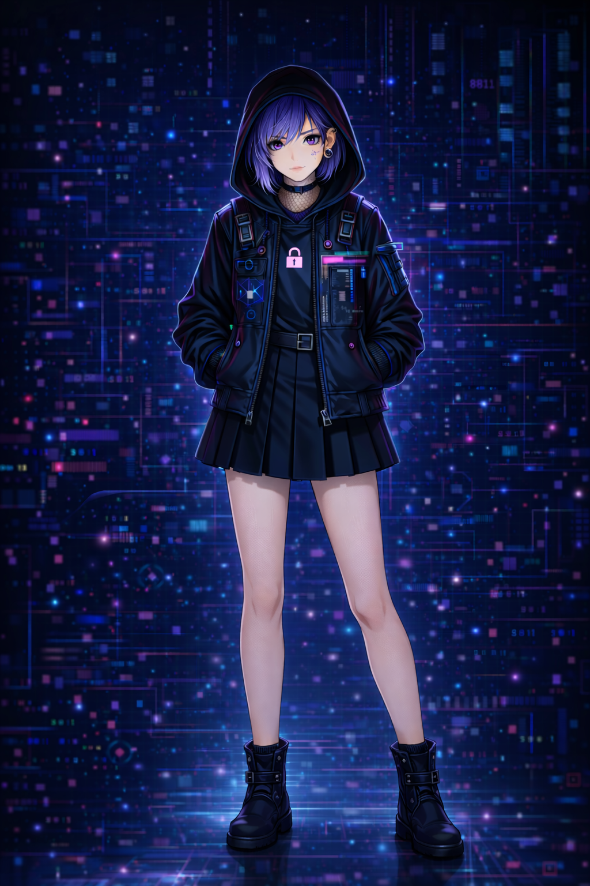

<!DOCTYPE html>
<html lang="ja">
<head>
<meta charset="UTF-8" />
<meta name="viewport" content="width=device-width, initial-scale=1.0" />
<title>管理コア</title>

<style>
html, body {
  margin: 0;
  padding: 0;
  width: 100%;
  height: 100%;
  background: #000;
  overflow: hidden;
}

/* ===== 世界全体 ===== */
.world {
  position: fixed;
  inset: 0;
  display: flex;
  align-items: center;
  justify-content: center;
  background: #000;
}

/* ===== 背景（動画 or PNG 両対応） ===== */
.bg-blur {
  position: absolute;
  inset: 0;
  z-index: 0;
  overflow: hidden;
}

.bg-blur video,
.bg-blur img {
  width: 100%;
  height: 100%;
  object-fit: cover;
  filter: blur(40px) brightness(0.5);
  transform: scale(1.1);
}

/* ===== 中央メイン（縦9:16固定） ===== */
.main {
  position: relative;
  height: 90vh;
  aspect-ratio: 9 / 16;
  z-index: 1;
  display: flex;
  align-items: center;
  justify-content: center;
}

/* 動画・画像 共通 */
.main video,
.main img {
  width: 100%;
  height: 100%;
  object-fit: contain;
  background: #000;
}
</style>
</head>

<body>
  <div class="world">

    <!-- 背景 -->
    <div class="bg-blur">
      <!-- 動画がある場合 -->
      <video src="bg_admin.mp4" autoplay loop muted playsinline></video>

      <!-- PNGを使う場合は上を消してこれを使う -->
      <!--  -->
    </div>

    <!-- 中央メイン -->
    <div class="main">
      <video src="bg_admin.mp4" autoplay loop muted playsinline></video>
      <!-- PNGの場合 -->
      <!--  -->
    </div>

  </div>
</body>
</html>
